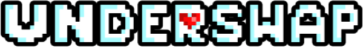
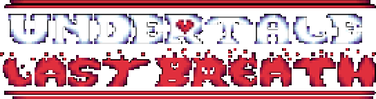
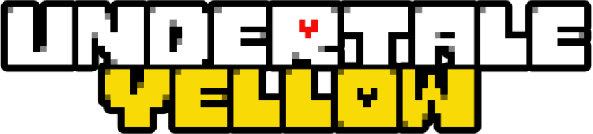

Informations sur la communauté et les fans d'Undertale.
Univers alternatifs (AUs) :
Undertale est un jeu vidéo qui a été si apprécié par la communauté que des univers alternatifs (aussi appelé "AU" pour Alternate Universe) de celui-ci ont été inventés par les fans.
En effet, les AUs sont des réponses à la question: "Que se passerait-il si...?" dans l'univers d'Undertale.

Personnages de Underswap
Par exemple, Underswap est un univers alternatif d'Undertale où les rôles et personnalités de nombreux personnages sont échangés, tandis que certains restent inchangés ou modifiés.
En effet, dans cet univers, Sans devient le frère confiant, excitable et extrêmement optimiste, et Papyrus prend le rôle du frère décontracté et protecteur.
Un autre exemple est Underfell, un univers alternatif où les monstres bienveillants d'Undertale sont remplacés par des versions vicieuses et malveillantes, et inversement.
Par exemple, Flowey, l'antagoniste d'Undertale, cherche ici à aider le protagoniste à s'échapper de l'Underground. Cet univers offre donc une vision plus sombre des monstres, les transformant en versions sinistres de leurs originaux.
Fan-games :
La communauté Undertale a également créé des jeux vidéo inspirés de l'univers original. Ces jeux, appelés "fan-games", sont réalisés par des fans et peuvent être indépendants des AUs ou basés sur un AU spécifique.

Extrait du combat contre Last Breath Sans
Par exemple, Undertale Last Breath est un fan-game centré sur le personnage de Sans. En effet, de nombreux fan-games présentent principalement Sans car c'est le personnage le plus populaire d'Undertale.
Dans ce jeu, le protagoniste a effectué de nombreuses routes génocides. Un jour, il découvre une porte inconnue et libère un personnage mystérieux qui révèle à Sans toutes les atrocités commises par le protagoniste. Face à ces horreurs, Sans jure de tout faire pour arrêter l'humain, même jusqu'à son dernier souffle. Le jeu est disponible sur Gamejolt ici.

Extrait du début de Undertale Yellow juste avant que le protagoniste rencontre Flowey
Contrairement à Undertale Last Breath, Undertale Yellow est un fan-game sorti récemment, montrant que la communauté d'Undertale continue de produire des jeux inspirés de celui-ci, même près de neuf ans après sa sortie. De plus, Undertale Yellow est l'un des rares fan-games se déroulant dans le passé d'Undertale. En effet, le joueur incarne Clover, le septième humain tombé, c'est-à-dire celui qui est tombé juste avant le protagoniste d'Undertale.
Au début du jeu, Clover rencontre Flowey et s'allie avec lui. Contrairement à ce qui se passe dans Undertale, Flowey n'est pas hostile envers le joueur et permet même la sauvegarde des parties.
Clover explore alors l'Underground du passé, se liant d'amitié ou non avec les monstres qu'il rencontre. Le jeu est également disponible sur Gamejolt et peut être joué ici.
Il existe donc de nombreux fan-games d'Undertale, la plupart disponibles sur Gamejolt, mais aussi sur Scratch. Moi-même, Kyllian LIM, auteur de ce site web, ai créé il y a plusieurs années, divers fan-games d'Undertale sur Scratch et les ai ensuite empaquetés en html, exe, etc... pour les publier sur Gamejolt.
Par exemple, j'ai créé un fan-game nommé "Divine Time Quartet" qui présente un combat contre les dieux les plus populaires des AUs s'ils s'alliaient pour vaincre le joueur. Ce fan-game peut être jouer maintenant ici (contrôles : flèches pour bouger et barre d'espace pour se soigner mais 5 fois maximum).
J'ai également créé un fan-game mettant en scène un combat contre Ink Sans, l'un des dieux de "Divine Time Quartet", s'il combattait à pleine puissance contre le protagoniste. Cependant, ce jeu n'est pas encore terminé et seule une démo est disponible.
Mais il reste jouable et peut être joué maintenant ici (contrôles : flèches pour bouger, "z" pour sélectionner et "x" pour revenir en arrière). En outre, j'ai créé d'autres jeux qui ne sont pas liés à Undertale. Vous pouvez les trouver sur Gamejolt ici.
 Accueil
Undertale
Fandom
Accueil
Undertale
Fandom